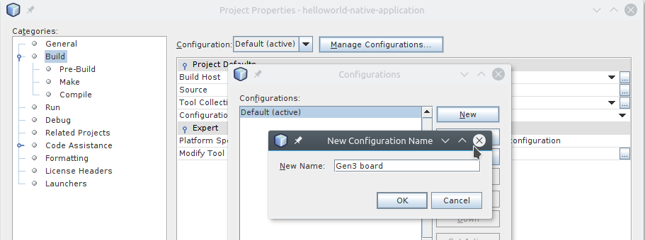
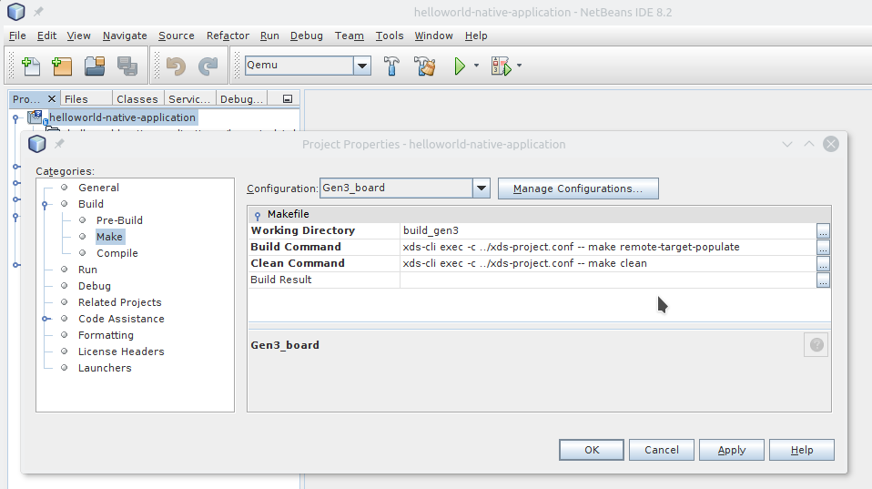

Build using an IDE
One option for building your application using XDS is to use an Integrated Development Environment (IDE). Many IDEs exist (e.g. NetBeans, Visual Studio Code, Qt Creator, Eclipse, and so forth).
This section first develops an XDS configuration file
(i.e. xds-project.conf) and then provides two
examples, NetBeans and Visual Studio, that do the following.
-
NetBeans: Creates two separate build configurations for a project, which makes it easy to switch back and forth between types of builds.
-
Visual Studio: Creates tasks that allow you to build an example based on CMake templates.
XDS Configuration File
This section shows how to create an XDS configuration file
(i.e. xds-project.conf) or how to re-use an existing file.
For example, the following commands set up the configuration
file for an aarch64 SDK to cross-build the
application for a Renesas Gen3 board.
# create file at root directory of your project
# for example:
# MY_PROJECT_DIR=/home/seb/xds-workspace/helloworld-native-application
cat > $MY_PROJECT_DIR/xds-project.conf << EOF
export XDS_AGENT_URL=localhost:8800
export XDS_PROJECT_ID=4021617e-ced0-11e7-acd2-3c970e49ad9b
export XDS_SDK_ID=c226821b-b5c0-386d-94fe-19f807946d03
EOF
NetBeans
This section creates two configurations: one to compile the project natively using native GNU gcc, and one to cross-compile the project using XDS.
Having two configurations allows you to easily switch between them using NetBean's Run -> Set Project Configuration menu.
Native Configuration
Follow these steps to create the native configuration:
-
Open the Tools -> Options menu.
-
Open the C/C++ tab.
-
Click on the Add button in the Build Tools sub-tab:
 {:: style="width:90%; max-width:700px; margin:auto; display:flex"}
{:: style="width:90%; max-width:700px; margin:auto; display:flex"}
- Fill the Make Command and Debugger Command fields to point to the XDS tools:
 {:: style="width:90%; max-width:700px; margin:auto; display:flex"}
{:: style="width:90%; max-width:700px; margin:auto; display:flex"}
-
Click OK.
-
Select the File -> New Project menu item to declare the project and create a native configuration.
-
Select C/C++ Project with Existing Sources and click on Next.
-
Specify your project directory and set Select Configuration Mode to "Custom". Be sure to keep Tool Collection set to "Default GNU" in order to create a native configuration, which is based on the native GNU GCC.
-
Click Next.
 {:: style="width:90%; max-width:700px; margin:auto; display:flex"}
{:: style="width:90%; max-width:700px; margin:auto; display:flex"}
-
Update the Run in Folder field to add the
build_nativesuffix. Doing so results in the build files being located in thebuild_nativesub-directory. Be sure to keep the defaults for all other settings and then click Next. {:: style="width:90%; max-width:700px; margin:auto; display:flex"}
{:: style="width:90%; max-width:700px; margin:auto; display:flex"} -
Click through Next several times while always keeping the default settings until the Finish button appears.
-
Click Finish to complete the creation of the native configuration.
Cross-Compilation Configuration
Follow these steps to create the configuration for cross-compilation based on the XDS tools:
-
Edit project properties (using menu File -> Project Properties) to add a new configuration that will use XDS to cross-compile your application for example for a Renesas Gen3 board.
-
in the Build category, click on Manage Configurations button and then New button to add a new configuration named for example "Gen3 board".
{:: style="width:90%; max-width:700px; margin:auto; display:flex"}
-
Click the Set Active button.
-
Select the Pre-Build sub-category, and set the following:
-
Working Directory:
build_gen3 - Command Line:
xds-cli exec -c ../xds-project.conf -- cmake -DRSYNC_TARGET=root@renesas-gen3 -DRSYNC_PREFIX=/opt .. -
Pre-build First:
ticked -
Select the Make sub-category, and set the following:
-
Working Directory:
build_gen3 - Build Command:
xds-cli exec -c ../xds-project.conf -- make remote-target-populate - Clean Command:
xds-cli exec -c ../xds-project.conf -- make clean
{:: style="width:90%; max-width:700px; margin:auto; display:flex"}
-
Select the Run sub-category, and set the following:
-
Run Command:
target/start-on-root@renesas-gen3.sh - Run Directory:
build-gen3
 {:: style="width:90%; max-width:700px; margin:auto; display:flex"}
{:: style="width:90%; max-width:700px; margin:auto; display:flex"}
- Click OK to save settings.
By changing the configuration from Default to Gen3 board, you can compile your helloworld application natively, which is the default configuration. Or, you can cross-compile your application using XDS for the Renesas Gen3 board, which is the Gen3 board configuration.
Visual Studio Code
This section presents a Visual Studio example that creates tasks that allow you to build an example that is based on CMake templates.
Follow these steps:
- Start Visual Studio Code and open your project using the following commands:
bash
cd $MY_PROJECT_DIR
code . &
-
Add new tasks by entering the
Ctrl+Shift+Pkey combination and selecting theTasks: Configure Taskcommand. A list of task runner templates appears. -
Define your own tasks. Following is an example that builds the helloworld-native-application that is based on CMake templates.
json
{
"version": "2.0.0",
"type": "shell",
"presentation": {
"reveal": "always"
},
"tasks": [
{
"label": "clean",
"type": "shell",
"command": "/bin/rm -rf ${workspaceFolder}/build/* && mkdir -p build && echo Cleanup done.",
"problemMatcher": []
},
{
"label": "pre-build",
"type": "shell",
"group": "build",
"command": "/opt/AGL/bin/xds-cli exec --rpath build --config xds-project.conf -- cmake -DRSYNC_TARGET=root@renesas-gen3 -DRSYNC_PREFIX=/opt ../",
"problemMatcher": [
"$gcc"
]
},
{
"label": "build",
"type": "shell",
"group": "build",
"command": "/opt/AGL/bin/xds-cli exec --rpath build --config xds-project.conf -- make widget",
"problemMatcher": [
"$gcc"
]
},
{
"label": "populate",
"type": "shell",
"command": "/opt/AGL/bin/xds-cli exec --rpath build --config xds-project.conf -- make widget-target-install",
"problemMatcher": []
}
]
}
-
Run a task by entering the
Ctrl+Shift+Pkey combination and selectingTasks: Run taskand then selecting the specific task. For example, selectpre-buildto trigger pre-build task. -
Optionally add keybindings that trigger tasks. Following is an example:
json
// Build
{
"key": "alt+f9",
"command": "workbench.action.tasks.runTask",
"args": "clean"
},
{
"key": "alt+f10",
"command": "workbench.action.tasks.runTask",
"args": "pre-build"
},
{
"key": "alt+f11",
"command": "workbench.action.tasks.runTask",
"args": "build"
},
{
"key": "alt+f12",
"command": "workbench.action.tasks.runTask",
"args": "populate"
},
NOTES: